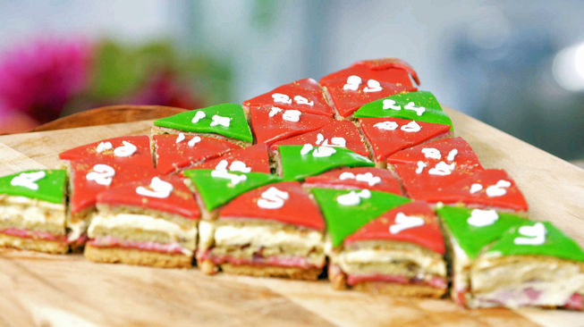

Cranberry Countdown

Ingrediënten
Bretons zandgebak
300 gram bloem
6 gram gedroogde gist
225 gram boter
210 gram suiker
90 gram eidooiers
6 gram zout
Pistachepasta
40 gram suiker
75 gram pistachenootjes (zonder dop)
2 eetlepels zonnebloemolie
snufje zout
Cranberry cremeux
150 gram suiker
5 eieren
150 gram boter
250 gram diepvries cranberry’s
2 blaadjes gelatine
Biscuit
140 gram amandelmeel
20 gram bloem
200 gram poedersuiker
4 eieren
130 gram eiwit
eetlepel pistachepasta
50 gram gedroogde cranberry's
Pistacheroom
250 milliliter slagroom
100 gram mascarpone
25 gram suiker
2 eetlepels pistachepasta
Afwerken/decoratie
100 gram poedersuiker
200 gram groene marsepein
200 gram witte marsepein
200 gram rode marsepein
eetbare goudglanspoeder
20 milliliter Wodka
Cranberry Countdown
Deze pistache-cranberry taart bestaat uit allemaal prachtige kleine taartjes. De krokante bodem met de zachte vulling is een perfecte combinatie, laat het feest maar beginnen!
Bakgereedschap:
- Keukenmachine met toebehoren
- Handmixer
- Staafmixer met hakmolen
- Bakthermometer
- Taartring 30 x 36 centimeter
- Mengkom
- Paletmes
- Bakpapier
- Vershoudfolie
- Bakplaat
- Deegroller
- Fondantrol
- Driehoekmal
- Kwast
- Steekvormpjes cijfers
- Steekvormpjes ster
Voorbereidingen:
- Verwarm de oven voor op 170 graden
Bretons zandgebak:
- Mix boter en suiker in een kom zacht.
- Voeg eierdooiers, bloem, gist en zout toe en meng goed.
- Bekleed de bakplaat met bakpapier en plaats de taartring erop.
- Verdeel het deeg over de taartring en strijk glad.
- Plaats de bakplaat in de voorverwarmde oven en bak het zandgebak in 30 minuten goudbruin en gaar.
Voorbereidingen:
- Verwarm de oven voor op 170 graden
Pistachepasta:
- Verhit een droge koekenpan en rooster de pistachenoten tot ze beginnen te geuren.
- Maal de noten fijn met de staafmixer (hakmolen).
- Voeg suiker, zout en eventueel olie toe en maal tot een smeuïge pasta.
Cranberry cremeux:
- Week de blaadjes gelatine in een bakje met koud water.
- Pureer de cranberry’s met een staafmixer.
- Voeg de cranberrypuree, ei en suiker aan een steelpan toe en verhit tot 80 graden.
- Haal de pan van het vuur, voeg de gelatine toe en laat het mengsel iets afkoelen.
- Volg met de boter en giet de cremeux in een lage bak om goed af te laten koelen.
Biscuit:
- Klop amandelmeel, 140 gram poedersuiker en de helft van het ei met de handmixer tot de hoeveelheid verdubbeld is. Voeg de rest van de eieren toe en klop het beslag nog 5 minuten.
- Voeg de pistachepasta, bloem en gedroogde cranberry's toe en spatel goed door.
- Klop vervolgens het eiwit in een vetvrije kom tot stijve pieken en spatel luchtig door het beslag.
- Bekleed 2 bakplaten met bakpapier en verdeel het beslag hierover.
- Plaats de bakplaten in de voorverwarmde oven en bak de biscuits in 10 minuten goudbruin en gaar.
- Laat de biscuits op een taartrooster afkoelen en bestrooi met de overige 60 gram poedersuiker.
- Keer de biscuits om, verwijder het bakpapier en steek met de taartring twee cirkels uit.
Pistacheroom:
- Klop slagroom, mascarpone en suiker stijf en voeg op het laatste moment de pistachepasta toe.
Afwerken/decoratie:
- Bekleed de taartring met verhoudfolie en plaats hierin het zanddeeg. Verdeel hierover de cremeux en dek af met een van de plakken biscuit.
- Volg met een laag pistacheroom en dek af met de tweede plak biscuit.
- Plaats de taart in de koelkast en ga verder met het marsepein.
- Bestuif het aanrecht met een beetje poedersuiker en rol de twee kleuren marsepein dun uit.
- Snijd 16 gelijke rode en 9 groene driehoeken uit de plakken marsepein.
- Rol de witte marsepein tot een dunne plak uit en steek met de steekvormpjes 24 cijfers (1 tot en met 24) en een ster.
- Maar vervolgens een verf van de goudglanspoeder en de wodka en bestrijk de uitgestoken vormpjes met de verf.
- Haal tot slot de taart uit de koelkast, garneer deze met de marsepein en snijd de taart langs de driehoeken in gelijke punten.
d